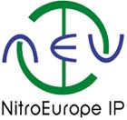

This document outlines the principles adopted by the NitroEurope project regarding its data policy. The detailed implementation of these principles will be further described in the NitroEurope Data Management Plan, to be developed in the course of the first 6 months of the project and updated throughout its lifetime.
This Data Policy was developed by the Data Management Committee (DMC) and its principles have been agreed by the NitroEurope Scientific Steering Committee.
The NitroEurope Data Policy addresses issues related to the provision, exchange, availability, maintenance and use of data produced by the NEU research activities or acquired from third parties as a support to this research.
The purpose of the NitroEurope Data Policy is to set up fundamental principles in view of
The NEU science activity is divided into six components that will deliver different types of data to the NEU distributed archive located at two dedicated data centres (DCs), namely the British Atmospheric Data Centre (BADC), UK, and the Joint Research Centre (JRC) at Ispra, Italy. Table 1 shows which DC is allocated to each science component. The DCs' responsibilities include archival, checking for completeness, maintenance and distribution of NEU data. Each science component has a Component Data Manager (CDM), whose responsibilities include liaison with the scientists and the Data Management Committee (see below), overseeing data collection and data quality checks, providing support to investigators in issues related to data formatting and submission.
| Table 1. Data centres allocated to the NEU science components. | ||
| Science component | DC | |
| C1 | Flux Network | BADC |
| C2 | Ecosystem Manipulation | |
| C3 | Modelling | |
| C4 | Landscape Analysis | |
| C5 | European Integration | JRC |
| C6 | Verification | |
A central NEU data web portal will be developed at CEH, with links to the two archives and to the online support offered by the data centres. The website will be the primary source of information on NEU data management issues.
A NEU Data Management Committee will co-ordinate and supervise all data management activities, liaise with the science Component Data Managers, ensure that the Data Policy is applied and make decisions regarding its implementation. The DMC will issue a NEU Data Management Plan where details of this implementation will be given. The DMC members will confer at regular intervals. The DMC is composed of
|
The DMC will issue a formal written annual report to the SSC. The DMC can form Task Forces to aid its work (cf. Activity 7.4 of the Description of Work).
The NEU archive will host all processed observational data produced by the project, together with any documentation pertaining to the data.
Selected significant model results will also be archived. It is possible that in some cases it will be worth to archive frozen model versions, together with the input files and instructions on how to run the code, as metadata documenting model outputs.
In recognition that raw data represent a potentially valuable source of future science developments, including possible revision of the processed data, the Principal Investigators (PIs) agree to ensure that they are stored safely with the relevant processing software or, alternatively, with documentation on retrieval algorithms, at least for the retention period as defined below. Although not necessarily archived at one of the DC, they should be documented on the web portal. The DMC will examine the fate of raw data on a case per case basis and will ensure that in all cases they are kept for the long term in a way allowing future access. The definition of .raw data. will be detailed in the Measurement and Modelling Protocols and the DMP.
In order to warrant continuity to the research activities within NEU, it is essential that data produced by one NEU team be delivered as soon as possible to the other NEU groups via the dedicated DC. Datasets collected over some defined period of time of the order of three to six months will be allocated submission deadlines. It will be the Component Data Managers. responsibility to ensure that submission deadlines are observed and to chase possibly late or missing data. An initial time chart considering the internal dynamics and interactions of all six NEU science components in terms of data deliverables and needs will be included in the Data Management Plan. It is likely that this schedule will evolve as a function of the work progress and the possible unforeseen obstacles or successes met in the course of the project by each of its components. The DMC will issue and advertise new submission deadlines as and when necessary. Failure to deliver data on time may be reported to the SSC for action to be taken.
Consortium Partners
All data will be immediately available to other PIs as soon as they have been finalized and inserted into the database. In order to allow investigators to validate and analyse their data and to publish their results, access to NEU data will be restricted to the NEU community for a certain amount of time. This retention time period will be five years after the submission due date or two years after the end of the project, depending on whichever occurs first. A password-protected archive will be set up. Access to the archive will be granted by the DC on application, after applicants have provided a brief description of their research subject and have agreed to the NEU Data Conditions of Use (see
Annex), including the requirement to contact the data originators prior to use of the data. The applications for access to the data will be channelled through the NEU Scientific Project Manager.
External Collaborators
While the retention period applies, data may be exceptionally communicated to external collaborators who have applied as above, after approval by the Data Originator(s) and Component Leader. This will, in particular, apply to participants of the CarboEurope IP, given the existing synergy between the two projects.
Public Access
Discovery metadata will be immediately available to the public. After the retention period, the NEU data will be released to the public domain but conditions of use will continue to apply regarding publications based on the data (see
next section). The way this is enforced will be defined in the DMP.
In the event that third-party data are lodged at one of the DC to support NEU research, access to these data will be ruled by the provider's data protocol. It is recommended that confidential data – that is, data not intended to be made public due to their potential commercial value or their private nature – be archived at one of the NEU DC only if they are a potential source of derived products that may be publicly distributed (e.g. subsets, averages, statistics,.). However, as it is likely that deriving by-products will require additional resources, it is left to the DC to make a decision on a case per case basis.
IPRs belong to the Data Originator or their respective institutes. During the retention period, the originators will have the priority to publish the analysis of their own data. In case of shared ownership analysis of the data will be published collectively by the originators.
Furthermore, at any time (i.e., during or after the retention period), investigators who have collected and/or done the initial analysis of the data will be invited to be co-authors of any publication or communication based on or using NitroEurope data, whether undertaken by scientists within the project or outside of it. In the event that the offer is declined, investigators who have collected and analysed the data must be duly acknowledged.
The NEU data archive is file-based. The adoption of one – or if possible not more than two – standard data file formats (for measurements and model results) is desirable in order to minimise difficulties of data exchange. The issue will be studied by the DMC and the adopted format(s) will be stated in the DMP. In choosing the data file format(s), the following criteria will be considered.
"Good practice" formatting principles to be followed (e.g. regarding adopted units, data layout, compliance with international standards) will be defined in the DMP. In addition to obvious advantages such as the meaningfulness of the data, compliance with standard formatting rules allows easy automated reading, sub-setting, visualisation and format conversion of the data. Such standards exist for a number of formats . guidelines are provided on the BADC website for NetCDF (binary) and NASA Ames (ASCII) (see links in Section 16).
Raw data, software, images and text documents will be archived in their original formats, provided they are accompanied by metadata describing the file format.
Metadata (i.e. data about the data) are a crucial element of a data archive. They allow the data to be searched (.discovery. metadata), read by humans or software, understood, interpreted and used. The quality and meaningfulness of metadata depend on their completeness and on how carefully they are selected, formulated and formatted. Good practice rules here also apply. It is recommended to include the metadata into the data files where possible, in order to produce self-descriptive data files. Some formats, such as NASA Ames, include a standard metadata format. Standard metadata conventions also exist, such as the Climate Forecast (CF) metadata convention developed for NetCDF but applicable to any geophysical dataset.
In addition to these standard pieces of information, any supporting documentation (collection methods, algorithms, model parameterisations, references, plots, quality information etc.) also forms part of the metadata, whether included in the data files or in separate documents.
The DMP will include or refer to a description of metadata to be provided with the NEU datasets.
If sensibly chosen, file names help navigation in the data archive. Furthermore, a common convention provides the database some homogeneity and ease of use. A file name convention may be stipulated by the DMP.
It is the PIs' responsibility to perform required calibration and validation prior to data submission to the NEU archive, and ensure that the data are of the best possible quality and include error estimates and/or flags as defined in the Measurement and Modelling Protocols. It will be one of the roles of the Component Data Managers to support and supervise quality checks.
Data completeness, in terms of file numbers and predefined aspects of the file contents, will be checked by the designated DC at the time of submission. Completeness checking will be automated where appropriate. Suitable software will be developed at the DC for this purpose, with detailed guidelines from the NEU Component Data Managers and additional support from the PIs. Defective files, accompanied by error diagnostics, will be sent back to their suppliers for improvement, and missing files will be signalled.
The designated DC will maintain the NEU datasets and ensure the security of the archive by making regular backups. Observational data will be kept for the long term. Model data are more sensitive to theoretical progress and code updates, and these data will be reviewed in interaction with the Originators, according to the DC.s established procedures.
The DCs and the NEU website administrator, advised and assisted by the DMC, will endeavour to provide support to the NEU scientists in all data related issues. These may include the following.
NitroEurope IP website:
http://www.neu.ceh.ac.uk
NEU Data Management (temporary) workspace:
http://bscw.badc.rl.ac.uk/bscw/bscw.cgi/0/62849
BADC homepage:
http://badc.nerc.ac.uk/
BADC documentation on:
| BADC | British Atmospheric Data Centre |
| CDM | Component Data Manager |
| CEH | Centre for Ecology and Hydrology |
| CF | Climate Forecast |
| Data Originator | Investigator who has collected and / or conducted the initial analysis of the data |
| DC | Data Centre(s) |
| DMC | Data Management Committee |
| DMP | Data Management Plan |
| DP | Data Policy |
| External Collaborator | Third Party (see below) working in a similar field who has entered a (formal or informal) two-way collaboration agreement with NitroEurope IP |
| IPR | Intellectual property Right(s) |
| JRC | Joint Research Centre (at Ispra) |
| NEU IP | NitroEurope Integrated Project |
| NRT | Near real time |
| PI | Principal Investigator. Person responsible for the execution of the project or part of the project as a partner institute as defined in the Consortium Agreement |
| SSC | Scientific Steering Committee |
| Third Party | Provider or user of data who is not part of the NitroEurope IP consortium |
The following conditions will apply to any use of NEU data, at any time.
"
These data were generated or collected within the framework of the NitroEurope IP.
The user agrees